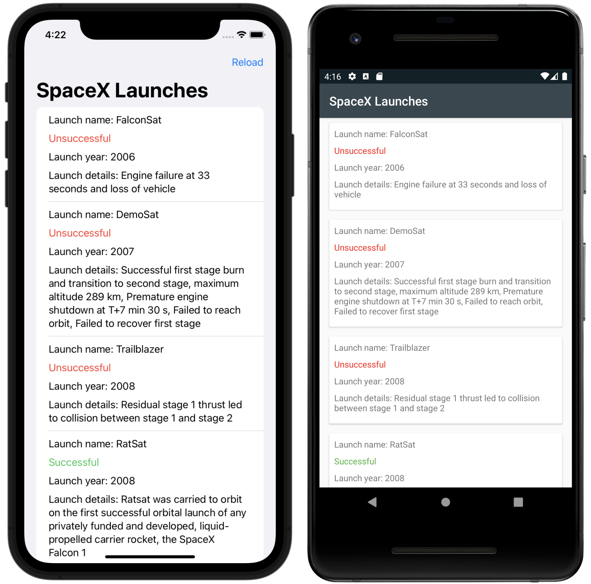
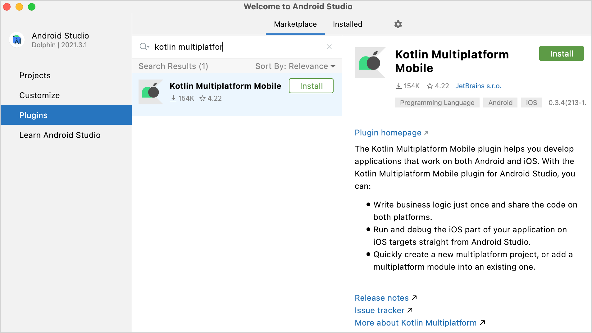
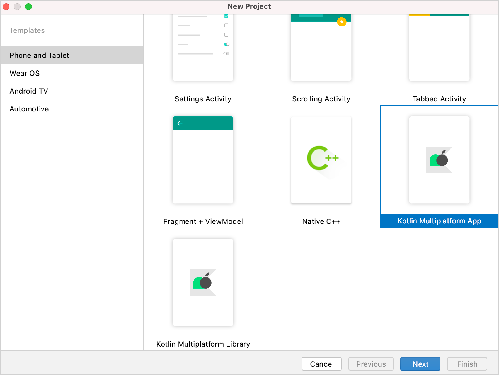
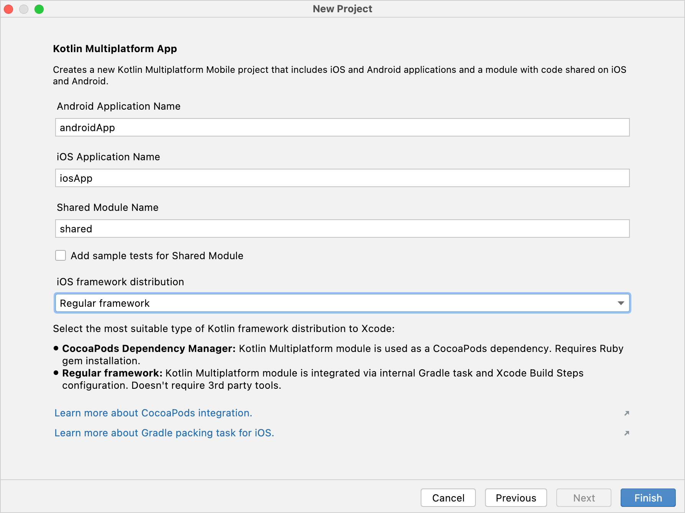
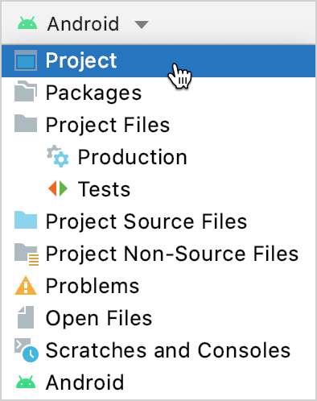
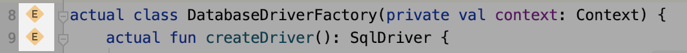
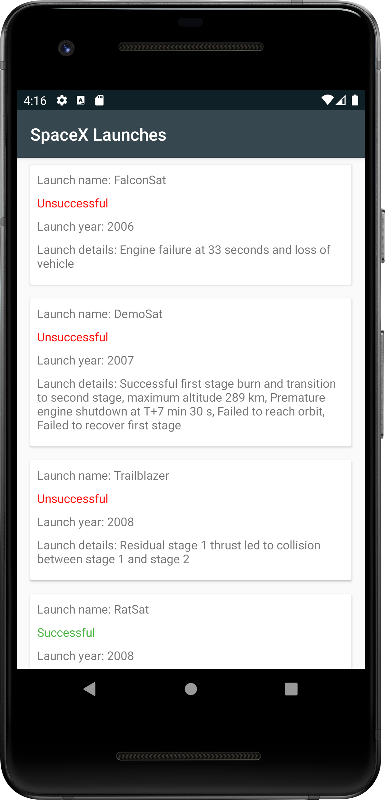
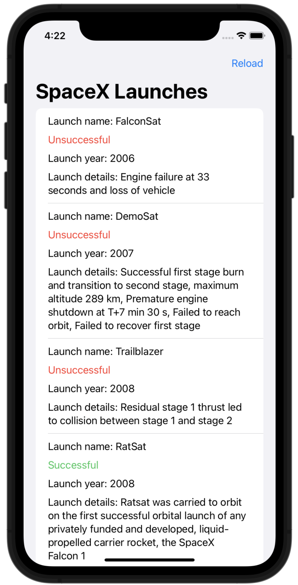

使用 Ktor 和 SQLDelight 创建多平台应用——教程
This tutorial demonstrates how to use Android Studio to create a mobile application for iOS and Android using Kotlin Multiplatform Mobile with Ktor and SQLDelight.
The application will include a module with shared code for both the iOS and Android platforms. The business logic and data access layers will be implemented only once in the shared module, while the UI of both applications will be native.
The output will be an app that retrieves data over the internet from the public SpaceX API, saves it in a local database, and displays a list of SpaceX rocket launches together with the launch date, results, and a detailed description of the launch:

You will use the following multiplatform libraries in the project:
- Ktor as an HTTP client for retrieving data over the internet.
kotlinx.serializationto deserialize JSON responses into objects of entity classes.kotlinx.coroutinesto write asynchronous code.- SQLDelight to generate Kotlin code from SQL queries and create a type-safe database API.
You can find the template project as well as the source code of the final application on the corresponding GitHub repository.
Before you start
- Download and install Android Studio.
Search for the Kotlin Multiplatform Mobile plugin in the Android Studio Marketplace and install it.

Download and install Xcode.
For more details, see the Set up the environment section.
Create a Multiplatform project
In Android Studio, select File | New | New Project. In the list of project templates, select Kotlin Multiplatform App and then click Next.

Name your application and click Next.
Select Regular framework in the list of iOS framework distribution options.

Keep all other options default. Click Finish.
To view the complete structure of the multiplatform mobile project, switch the view from Android to Project.

For more on project features and how to use them, see Understand the project structure.
You can find the configured project on the
masterbranch.
Add dependencies to the multiplatform library
To add a multiplatform library to the shared module, you need to add dependency instructions (implementation) for all
libraries to the dependencies block of the relevant source sets in the build.gradle.kts file.
Both the kotlinx.serialization and SQLDelight libraries also require additional configurations.
In the
shareddirectory, specify the dependencies on all the required libraries in thebuild.gradle.ktsfile:val coroutinesVersion = "1.7.1" val ktorVersion = "2.3.2" val sqlDelightVersion = "1.5.5" val dateTimeVersion = "0.4.0" sourceSets { targetHierarchy.default() val commonMain by getting { dependencies { implementation("org.jetbrains.kotlinx:kotlinx-coroutines-core:$coroutinesVersion") implementation("io.ktor:ktor-client-core:$ktorVersion") implementation("io.ktor:ktor-client-content-negotiation:$ktorVersion") implementation("io.ktor:ktor-serialization-kotlinx-json:$ktorVersion") implementation("com.squareup.sqldelight:runtime:$sqlDelightVersion") implementation("org.jetbrains.kotlinx:kotlinx-datetime:$dateTimeVersion") } } val androidMain by getting { dependencies { implementation("io.ktor:ktor-client-android:$ktorVersion") implementation("com.squareup.sqldelight:android-driver:$sqlDelightVersion") } } val iosMain by getting { // ... dependencies { implementation("io.ktor:ktor-client-darwin:$ktorVersion") implementation("com.squareup.sqldelight:native-driver:$sqlDelightVersion") } } }- Each library requires a core artifact in the common source set.
- Both the SQLDelight and Ktor libraries need platform drivers in the iOS and Android source sets, as well.
- In addition, Ktor needs the serialization feature to use
kotlinx.serializationfor processing network requests and responses.
At the very beginning of the
build.gradle.ktsfile in the sameshareddirectory, add the following lines to thepluginsblock:plugins { // ... kotlin("plugin.serialization") version "1.9.10" id("com.squareup.sqldelight") }Now go to the
build.gradle.ktsfile in the project root directory and specify the classpath for the plugin in the build system dependencies:buildscript { dependencies { // ... classpath("com.squareup.sqldelight:gradle-plugin:1.5.5") } }Finally, define the SQLDelight version in the
gradle.propertiesfile in the project root directory to ensure that the SQLDelight versions of the plugin and the libraries are the same:sqlDelightVersion=1.5.5Sync the Gradle project.
Learn more about adding dependencies on multiplatform libraries.
You can find this state of the project on the
finalbranch.
Create an application data model
The Kotlin Multiplatform app will contain the public SpaceXSDK class, the facade over networking and cache services.
The application data model will have three entity classes with:
- General information about the launch
- A URL to external information
Information about the rocket
In
shared/src/commonMain/kotlin, add thecom.jetbrains.handson.kmm.shared.entitypackage.- Create the
Entity.ktfile inside the package. Declare all the data classes for basic entities:
kotlin{src="multiplatform-mobile-tutorial/Entity.kt" initial-collapse-state="collapsed" collapsed-title="data class RocketLaunch" lines="3-41" }
Each serializable class must be marked with the @Serializable annotation. The kotlinx.serialization plugin
automatically generates a default serializer for @Serializable classes unless you explicitly pass a link to a
serializer through the annotation argument.
However, you don't need to do that in this case. The @SerialName annotation allows you to redefine field names, which helps
to declare properties in data classes with more easily readable names.
You can find the state of the project after this section on the
finalbranch.
Configure SQLDelight and implement cache logic
Configure SQLDelight
The SQLDelight library allows you to generate a type-safe Kotlin database API from SQL queries. During compilation, the generator validates the SQL queries and turns them into Kotlin code that can be used in the shared module.
The library is already in the project. To configure it, go to the shared directory and add the sqldelight block to
the end of the build.gradle.kts file. The block will contain a list of databases and their parameters:
sqldelight {
database("AppDatabase") {
packageName = "com.jetbrains.handson.kmm.shared.cache"
}
}
The packageName parameter specifies the package name for the generated Kotlin sources.
Consider installing the official SQLite plugin for working with
.sqfiles.
Generate the database API
First, create the .sq file, which will contain all the needed SQL queries. By default, the SQLDelight plugin reads
.sq from the sqldelight folder:
- In
shared/src/commonMain, create a newsqldelightdirectory and add thecom.jetbrains.handson.kmm.shared.cachepackage. - Inside the package, create an
.sqfile with the name of the database,AppDatabase.sq. All the SQL queries for the application will be in this file. The database will contain a table with data about launches. To create the table, add the following code to the
AppDatabase.sqfile:CREATE TABLE Launch ( flightNumber INTEGER NOT NULL, missionName TEXT NOT NULL, details TEXT, launchSuccess INTEGER AS Boolean DEFAULT NULL, launchDateUTC TEXT NOT NULL, patchUrlSmall TEXT, patchUrlLarge TEXT, articleUrl TEXT );To insert data into the tables, declare an SQL insert function:
insertLaunch: INSERT INTO Launch(flightNumber, missionName, details, launchSuccess, launchDateUTC, patchUrlSmall, patchUrlLarge, articleUrl) VALUES(?, ?, ?, ?, ?, ?, ?, ?);To clear data in the tables, declare an SQL delete function:
removeAllLaunches: DELETE FROM Launch;In the same way, declare a function to retrieve data:
selectAllLaunchesInfo: SELECT Launch.* FROM Launch;
After the project is compiled, the generated Kotlin code will be stored in the shared/build/generated/sqldelight
directory. The generator will create an interface named AppDatabase, as specified in build.gradle.kts.
Create platform database drivers
To initialize AppDatabase, pass an SqlDriver instance to it. SQLDelight provides multiple platform-specific
implementations of the SQLite driver, so you need to create them for each platform separately. You can do this by using
expected and actual declarations.
Create an abstract factory for database drivers. To do this, in
shared/src/commonMain/kotlin, create thecom.jetbrains.handson.kmm.shared.cachepackage and theDatabaseDriverFactoryclass inside it:package com.jetbrains.handson.kmm.shared.cache import com.squareup.sqldelight.db.SqlDriver expect class DatabaseDriverFactory { fun createDriver(): SqlDriver }Now provide
actualimplementations for this expected class.On Android, the
AndroidSqliteDriverclass implements the SQLite driver. Pass the database information and the link to the context to theAndroidSqliteDriverclass constructor.For this, in the
shared/src/androidMain/kotlindirectory, create thecom.jetbrains.handson.kmm.shared.cachepackage and aDatabaseDriverFactoryclass inside it with the actual implementation:package com.jetbrains.handson.kmm.shared.cache import android.content.Context import com.squareup.sqldelight.android.AndroidSqliteDriver import com.squareup.sqldelight.db.SqlDriver actual class DatabaseDriverFactory(private val context: Context) { actual fun createDriver(): SqlDriver { return AndroidSqliteDriver(AppDatabase.Schema, context, "test.db") } }On iOS, the SQLite driver implementation is the
NativeSqliteDriverclass. In theshared/src/iosMain/kotlindirectory, create acom.jetbrains.handson.kmm.shared.cachepackage and aDatabaseDriverFactoryclass inside it with the actual implementation:package com.jetbrains.handson.kmm.shared.cache import com.squareup.sqldelight.db.SqlDriver import com.squareup.sqldelight.drivers.native.NativeSqliteDriver actual class DatabaseDriverFactory { actual fun createDriver(): SqlDriver { return NativeSqliteDriver(AppDatabase.Schema, "test.db") } }
Instances of these factories will be created later in the code of your Android and iOS projects.
You can navigate through the expect declarations and actual implementations by clicking the handy gutter icon:

Implement cache
So far, you have added platform database drivers and an AppDatabase class to perform database operations. Now create
a Database class, which will wrap the AppDatabase class and contain the caching logic.
In the common source set
shared/src/commonMain/kotlin, create a newDatabaseclass in thecom.jetbrains.handson.kmm.shared.cachepackage. It will be common to both platform logics.To provide a driver for
AppDatabase, pass an abstractDatabaseDriverFactoryto theDatabaseclass constructor:package com.jetbrains.handson.kmm.shared.cache import com.jetbrains.handson.kmm.shared.entity.Links import com.jetbrains.handson.kmm.shared.entity.Patch import com.jetbrains.handson.kmm.shared.entity.RocketLaunch internal class Database(databaseDriverFactory: DatabaseDriverFactory) { private val database = AppDatabase(databaseDriverFactory.createDriver()) private val dbQuery = database.appDatabaseQueries }This class's visibility is set to internal, which means it is only accessible from within the multiplatform module.
Inside the
Databaseclass, implement some data handling operations. Add a function to clear all the tables in the database in a single SQL transaction:internal fun clearDatabase() { dbQuery.transaction { dbQuery.removeAllLaunches() } }Create a function to get a list of all the rocket launches:
import com.jetbrains.handson.kmm.shared.entity.Links import com.jetbrains.handson.kmm.shared.entity.Patch import com.jetbrains.handson.kmm.shared.entity.RocketLaunch internal fun getAllLaunches(): List<RocketLaunch> { return dbQuery.selectAllLaunchesInfo(::mapLaunchSelecting).executeAsList() } private fun mapLaunchSelecting( flightNumber: Long, missionName: String, details: String?, launchSuccess: Boolean?, launchDateUTC: String, patchUrlSmall: String?, patchUrlLarge: String?, articleUrl: String? ): RocketLaunch { return RocketLaunch( flightNumber = flightNumber.toInt(), missionName = missionName, details = details, launchDateUTC = launchDateUTC, launchSuccess = launchSuccess, links = Links( patch = Patch( small = patchUrlSmall, large = patchUrlLarge ), article = articleUrl ) ) }The argument passed to
selectAllLaunchesInfois a function that maps the database entity class to another type, which in this case is theRocketLaunchdata model class.Add a function to insert data into the database:
internal fun createLaunches(launches: List<RocketLaunch>) { dbQuery.transaction { launches.forEach { launch -> insertLaunch(launch) } } } private fun insertLaunch(launch: RocketLaunch) { dbQuery.insertLaunch( flightNumber = launch.flightNumber.toLong(), missionName = launch.missionName, details = launch.details, launchSuccess = launch.launchSuccess ?: false, launchDateUTC = launch.launchDateUTC, patchUrlSmall = launch.links.patch?.small, patchUrlLarge = launch.links.patch?.large, articleUrl = launch.links.article ) }
The Database class instance will be created later, along with the SDK facade class.
You can find the state of the project after this section on the
finalbranch.
Implement an API service
To retrieve data over the internet, you'll need the SpaceX public API
and a single method to retrieve the list of all launches from the v5/launches endpoint.
Create a class that will connect the application to the API:
In the common source set
shared/src/commonMain/kotlin, create thecom.jetbrains.handson.kmm.shared.networkpackage and theSpaceXApiclass inside it:package com.jetbrains.handson.kmm.shared.network import com.jetbrains.handson.kmm.shared.entity.RocketLaunch import io.ktor.client.* import io.ktor.client.call.* import io.ktor.client.plugins.contentnegotiation.* import io.ktor.client.request.* import io.ktor.serialization.kotlinx.json.* import kotlinx.serialization.json.Json class SpaceXApi { private val httpClient = HttpClient { install(ContentNegotiation) { json(Json { ignoreUnknownKeys = true useAlternativeNames = false }) } } }- This class executes network requests and deserializes JSON responses into entities from the
entitypackage. The KtorHttpClientinstance initializes and stores thehttpClientproperty. - This code uses the Ktor
ContentNegotiationplugin to deserialize theGETrequest result. The plugin processes the request and the response payload as JSON, serializing and deserializing them using a special serializer.
- This class executes network requests and deserializes JSON responses into entities from the
Declare the data retrieval function that will return the list of
RocketLaunches:suspend fun getAllLaunches(): List<RocketLaunch> { return httpClient.get("https://api.spacexdata.com/v5/launches").body() }- The
getAllLaunchesfunction has thesuspendmodifier because it contains a call of the suspend functionget(), which includes an asynchronous operation to retrieve data over the internet and can only be called from a coroutine or another suspend function. The network request will be executed in the HTTP client's thread pool. - The URL is defined inside the
get()function to send requests.
- The
Add internet access permission
To access the internet, the Android application needs the appropriate permission. Since all network requests are made from the shared module, adding the internet access permission to this module's manifest makes sense.
In the androidApp/src/main/AndroidManifest.xml file, add the following permission to the manifest:
<?xml version="1.0" encoding="utf-8"?>
<manifest xmlns:android="http://schemas.android.com/apk/res/android">
<uses-permission android:name="android.permission.INTERNET" />
</manifest>
You can find the state of the project after this section on the
finalbranch.
Build an SDK
Your iOS and Android applications will communicate with the SpaceX API through the shared module, which will provide a public class.
In the
com.jetbrains.handson.kmm.sharedpackage of the common source set, create theSpaceXSDKclass:package com.jetbrains.handson.kmm.shared import com.jetbrains.handson.kmm.shared.cache.Database import com.jetbrains.handson.kmm.shared.cache.DatabaseDriverFactory import com.jetbrains.handson.kmm.shared.network.SpaceXApi class SpaceXSDK (databaseDriverFactory: DatabaseDriverFactory) { private val database = Database(databaseDriverFactory) private val api = SpaceXApi() }This class will be the facade over the
DatabaseandSpaceXApiclasses.To create a
Databaseclass instance, you'll need to provide theDatabaseDriverFactoryplatform instance to it, so you'll inject it from the platform code through theSpaceXSDKclass constructor.import com.jetbrains.handson.kmm.shared.entity.RocketLaunch @Throws(Exception::class) suspend fun getLaunches(forceReload: Boolean): List<RocketLaunch> { val cachedLaunches = database.getAllLaunches() return if (cachedLaunches.isNotEmpty() && !forceReload) { cachedLaunches } else { api.getAllLaunches().also { database.clearDatabase() database.createLaunches(it) } } }- The class contains one function for getting all launch information. Depending on the value of
forceReload, it returns cached values or loads the data from the internet and then updates the cache with the results. If there is no cached data, it loads the data from the internet independently of theforceReloadflag’s value. - Clients of your SDK could use a
forceReloadflag to load the latest information about the launches, which would allow the user to use the pull-to-refresh gesture. - To handle exceptions produced by the Ktor client in Swift, the function is marked with the
@Throwsannotation.
All Kotlin exceptions are unchecked, while Swift has only checked errors. Thus, to make your Swift code aware of expected exceptions, Kotlin functions should be marked with the
@Throwsannotation specifying a list of potential exception classes.- The class contains one function for getting all launch information. Depending on the value of
You can find the state of the project after this section on the
finalbranch.
Create the Android application
The Kotlin Multiplatform Mobile plugin for Android Studio has already handled the configuration for you, so the Kotlin Multiplatform shared module is already connected to your Android application.
Before implementing the UI and the presentation logic, add all the required dependencies to
the androidApp/build.gradle.kts:
// ...
dependencies {
implementation(project(":shared"))
implementation("com.google.android.material:material:1.9.0")
implementation("androidx.appcompat:appcompat:1.6.1")
implementation("androidx.constraintlayout:constraintlayout:2.1.4")
implementation("androidx.swiperefreshlayout:swiperefreshlayout:1.1.0")
implementation("org.jetbrains.kotlinx:kotlinx-coroutines-android:1.7.1")
implementation("androidx.core:core-ktx:1.10.1")
implementation("androidx.recyclerview:recyclerview:1.3.0")
implementation("androidx.swiperefreshlayout:swiperefreshlayout:1.1.0")
implementation("androidx.cardview:cardview:1.0.0")
}
// ...
Implement the UI: display the list of rocket launches
To implement the UI, create the
layout/activity_main.xmlfile inandroidApp/src/main/res.The screen is based on the
ConstraintLayoutwith theSwipeRefreshLayoutinside it, which containsRecyclerViewandFrameLayoutwith a background with aProgressBaracross its center:xml{src="multiplatform-mobile-tutorial/activity_main.xml" initial-collapse-state="collapsed" collapsed-title="androidx.constraintlayout.widget.ConstraintLayout xmlns:android" lines="1-26"}In
androidApp/src/main/java, replace the implementation of theMainActivityclass, adding the properties for the UI elements:class MainActivity : AppCompatActivity() { private lateinit var launchesRecyclerView: RecyclerView private lateinit var progressBarView: FrameLayout private lateinit var swipeRefreshLayout: SwipeRefreshLayout override fun onCreate(savedInstanceState: Bundle?) { super.onCreate(savedInstanceState) title = "SpaceX Launches" setContentView(R.layout.activity_main) launchesRecyclerView = findViewById(R.id.launchesListRv) progressBarView = findViewById(R.id.progressBar) swipeRefreshLayout = findViewById(R.id.swipeContainer) } }For the
RecyclerViewelement to work, you need to create an adapter (as a subclass ofRecyclerView.Adapter) that will convert raw data into list item views. To do this, create a separateLaunchesRvAdapterclass:class LaunchesRvAdapter(var launches: List<RocketLaunch>) : RecyclerView.Adapter<LaunchesRvAdapter.LaunchViewHolder>() { override fun onCreateViewHolder(parent: ViewGroup, viewType: Int): LaunchViewHolder { return LayoutInflater.from(parent.context) .inflate(R.layout.item_launch, parent, false) .run(::LaunchViewHolder) } override fun getItemCount(): Int = launches.count() override fun onBindViewHolder(holder: LaunchViewHolder, position: Int) { holder.bindData(launches[position]) } inner class LaunchViewHolder(itemView: View) : RecyclerView.ViewHolder(itemView) { // ... fun bindData(launch: RocketLaunch) { // ... } } }Create an
item_launch.xmlresource file inandroidApp/src/main/res/layout/with the items view layout:xml{src="multiplatform-mobile-tutorial/item_launch.xml" initial-collapse-state="collapsed" collapsed-title="androidx.cardview.widget.CardView xmlns:android" lines="1-28"}In
androidApp/src/main/res/values/, either create your appearance of the app or copy the following styles:
【colors.xml】
<?xml version="1.0" encoding="utf-8"?>
<resources>
<color name="colorPrimary">#37474f</color>
<color name="colorPrimaryDark">#102027</color>
<color name="colorAccent">#62727b</color>
<color name="colorSuccessful">#4BB543</color>
<color name="colorUnsuccessful">#FC100D</color>
<color name="colorNoData">#615F5F</color>
</resources>
【strings.xml】
<?xml version="1.0" encoding="utf-8"?>
<resources>
<string name="app_name">SpaceLaunches</string>
<string name="successful">Successful</string>
<string name="unsuccessful">Unsuccessful</string>
<string name="no_data">No data</string>
<string name="launch_year_field">Launch year: %s</string>
<string name="mission_name_field">Launch name: %s</string>
<string name="launch_success_field">Launch success: %s</string>
<string name="details_field">Launch details: %s</string>
</resources>
【styles.xml】
<resources>
<!-- Base application theme. -->
<style name="AppTheme" parent="Theme.AppCompat.Light.DarkActionBar">
<!-- Customize your theme here. -->
<item name="colorPrimary">@color/colorPrimary</item>
<item name="colorPrimaryDark">@color/colorPrimaryDark</item>
<item name="colorAccent">@color/colorAccent</item>
</style>
</resources>
Complete the implementation of the
RecyclerView.Adapter:class LaunchesRvAdapter(var launches: List<RocketLaunch>) : RecyclerView.Adapter<LaunchesRvAdapter.LaunchViewHolder>() { // ... inner class LaunchViewHolder(itemView: View) : RecyclerView.ViewHolder(itemView) { private val missionNameTextView = itemView.findViewById<TextView>(R.id.missionName) private val launchYearTextView = itemView.findViewById<TextView>(R.id.launchYear) private val launchSuccessTextView = itemView.findViewById<TextView>(R.id.launchSuccess) private val missionDetailsTextView = itemView.findViewById<TextView>(R.id.details) fun bindData(launch: RocketLaunch) { val ctx = itemView.context missionNameTextView.text = ctx.getString(R.string.mission_name_field, launch.missionName) launchYearTextView.text = ctx.getString(R.string.launch_year_field, launch.launchYear.toString()) missionDetailsTextView.text = ctx.getString(R.string.details_field, launch.details ?: "") val launchSuccess = launch.launchSuccess if (launchSuccess != null ) { if (launchSuccess) { launchSuccessTextView.text = ctx.getString(R.string.successful) launchSuccessTextView.setTextColor((ContextCompat.getColor(itemView.context, R.color.colorSuccessful))) } else { launchSuccessTextView.text = ctx.getString(R.string.unsuccessful) launchSuccessTextView.setTextColor((ContextCompat.getColor(itemView.context, R.color.colorUnsuccessful))) } } else { launchSuccessTextView.text = ctx.getString(R.string.no_data) launchSuccessTextView.setTextColor((ContextCompat.getColor(itemView.context, R.color.colorNoData))) } } } }Update the
MainActivityclass as follows:class MainActivity : AppCompatActivity() { // ... private val launchesRvAdapter = LaunchesRvAdapter(listOf()) override fun onCreate(savedInstanceState: Bundle?) { // ... launchesRecyclerView.adapter = launchesRvAdapter launchesRecyclerView.layoutManager = LinearLayoutManager(this) swipeRefreshLayout.setOnRefreshListener { swipeRefreshLayout.isRefreshing = false displayLaunches(true) } displayLaunches(false) } private fun displayLaunches(needReload: Boolean) { // TODO: Presentation logic } }Here you create an instance of
LaunchesRvAdapter, configure theRecyclerViewcomponent, and implement all theLaunchesListViewinterface functions. To catch the screen refresh gesture, you add a listener to theSwipeRefreshLayout.
Implement the presentation logic
Create an instance of the
SpaceXSDKclass from the shared module and inject an instance ofDatabaseDriverFactoryin it:class MainActivity : AppCompatActivity() { // ... private val sdk = SpaceXSDK(DatabaseDriverFactory(this)) }Implement the private function
displayLaunches(needReload: Boolean). It runs thegetLaunches()function inside the coroutine launched in the mainCoroutineScope, handles exceptions, and displays the error text in the toast message:class MainActivity : AppCompatActivity() { private val mainScope = MainScope() // ... override fun onDestroy() { super.onDestroy() mainScope.cancel() } // ... private fun displayLaunches(needReload: Boolean) { progressBarView.isVisible = true mainScope.launch { kotlin.runCatching { sdk.getLaunches(needReload) }.onSuccess { launchesRvAdapter.launches = it launchesRvAdapter.notifyDataSetChanged() }.onFailure { Toast.makeText(this@MainActivity, it.localizedMessage, Toast.LENGTH_SHORT).show() } progressBarView.isVisible = false } } }Select androidApp from the run configurations menu, choose an emulator, and click the run button:

You've just created an Android application that has its business logic implemented in the Kotlin Multiplatform Mobile module.
You can find the state of the project after this section on the
finalbranch.
Create the iOS application
For the iOS part of the project, you'll make use of SwiftUI to build the user interface and the "Model View View-Model" pattern to connect the UI to the shared module, which contains all the business logic.
The shared module is already connected to the iOS project because the Android Studio plugin wizard has done all the configuration.
You can import it the same way you would regular iOS dependencies: import shared.
Implement the UI
First, you'll create a RocketLaunchRow SwiftUI view for displaying an item from the list. It will be based on the HStack
and VStack views. There will be extensions on the RocketLaunchRow structure with useful helpers for displaying the
data.
- Launch your Xcode app and select Open a project or file.
- Navigate to your project and select the
iosAppfolder. Click Open. In your Xcode project, create a new Swift file with the type SwiftUI View, name it
RocketLaunchRow, and update it with the following code:import SwiftUI import shared struct RocketLaunchRow: View { var rocketLaunch: RocketLaunch var body: some View { HStack() { VStack(alignment: .leading, spacing: 10.0) { Text("Launch name: \(rocketLaunch.missionName)") Text(launchText).foregroundColor(launchColor) Text("Launch year: \(String(rocketLaunch.launchYear))") Text("Launch details: \(rocketLaunch.details ?? "")") } Spacer() } } } extension RocketLaunchRow { private var launchText: String { if let isSuccess = rocketLaunch.launchSuccess { return isSuccess.boolValue ? "Successful" : "Unsuccessful" } else { return "No data" } } private var launchColor: Color { if let isSuccess = rocketLaunch.launchSuccess { return isSuccess.boolValue ? Color.green : Color.red } else { return Color.gray } } }The list of launches will be displayed in the
ContentView, which the project wizard has already created.Create a
ViewModelclass for theContentView, which will prepare and manage the data. Declare it as an extension to theContentView, as they are closely connected, and then add the following code toContentView.swift:// ... extension ContentView { enum LoadableLaunches { case loading case result([RocketLaunch]) case error(String) } @MainActor class ViewModel: ObservableObject { @Published var launches = LoadableLaunches.loading } }- The Combine framework connects the view model (
ContentView.ViewModel) with the view (ContentView). ContentView.ViewModelis declared as anObservableObjectand@Publishedwrapper is used for thelaunchesproperty, so the view model will emit signals whenever this property changes.
- The Combine framework connects the view model (
Implement the body of the
ContentViewfile and display the list of launches:struct ContentView: View { @ObservedObject private(set) var viewModel: ViewModel var body: some View { NavigationView { listView() .navigationBarTitle("SpaceX Launches") .navigationBarItems(trailing: Button("Reload") { self.viewModel.loadLaunches(forceReload: true) }) } } private func listView() -> AnyView { switch viewModel.launches { case .loading: return AnyView(Text("Loading...").multilineTextAlignment(.center)) case .result(let launches): return AnyView(List(launches) { launch in RocketLaunchRow(rocketLaunch: launch) }) case .error(let description): return AnyView(Text(description).multilineTextAlignment(.center)) } } }The
@ObservedObjectproperty wrapper is used to subscribe to the view model.To make it compile, the
RocketLaunchclass needs to confirm theIdentifiableprotocol, as it is used as a parameter for initializing theListSwift UIView. TheRocketLaunchclass already has a property namedid, so add the following to the bottom ofContentView.swift:extension RocketLaunch: Identifiable { }
Load the data
To retrieve the data about the rocket launches in the view model, you'll need an instance of SpaceXSDK from the Multiplatform
library.
In
ContentView.swift, pass it in through the constructor:extension ContentView { // ... @MainActor class ViewModel: ObservableObject { let sdk: SpaceXSDK @Published var launches = LoadableLaunches.loading init(sdk: SpaceXSDK) { self.sdk = sdk self.loadLaunches(forceReload: false) } func loadLaunches(forceReload: Bool) { // TODO: retrieve data } } }Call the
getLaunches()function from theSpaceXSDKclass and save the result in thelaunchesproperty:func loadLaunches(forceReload: Bool) { Task { do { self.launches = .loading let launches = try await sdk.getLaunches(forceReload: forceReload) self.launches = .result(launches) } catch { self.launches = .error(error.localizedDescription) } } }- When you compile a Kotlin module into an Apple framework, suspending functions
are available in it as functions with callbacks (
completionHandler). - Since the
getLaunchesfunction is marked with the@Throws(Exception::class)annotation, any exceptions that are instances of theExceptionclass or its subclass will be propagated asNSError. Therefore, all such errors can be caught by theloadLaunches()function.
- When you compile a Kotlin module into an Apple framework, suspending functions
are available in it as functions with callbacks (
Go to the entry point of the app,
iOSApp.swift, and initialize the SDK, view, and view model:import SwiftUI import shared @main struct iOSApp: App { let sdk = SpaceXSDK(databaseDriverFactory: DatabaseDriverFactory()) var body: some Scene { WindowGroup { ContentView(viewModel: .init(sdk: sdk)) } } }In Android Studio, switch to the iosApp configuration, choose an emulator, and run it to see the result:

You can find the final version of the project on the
finalbranch.
下一步做什么？
This tutorial features some potentially resource-heavy operations, like parsing JSON and making requests to the database in the main thread. To learn about how to write concurrent code and optimize your app, see How to work with concurrency.
You can also check out these additional learning materials: